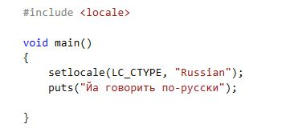
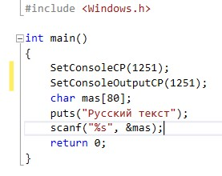

Основы алгоритмизации и программирования
Базовые операции ввода/вывода
Edward & Albert / github:Tgjmjgj
Содержание лекции
Ввод/вывод
Обмен данными между программой и внешними устройствами осуществляется с помощью операций ввода/вывода.
Типы ввода/вывод
- Форматированный ввод/вывод - C
- Потоковый ввод/вывод - C++
Как научить консоль общаться "по-русски"
По-умолчанию консоль не предназначена для ввода отличных от латинских символов. Для добавления возможности использования кириллицы в консоли существует несколько вариантов действий.
Способ 1 - изменение локали
Использование русской локали позволяет самым простым образом использовать русскоязычный вывод. Но на ввод она не распространяется. Способ 2 - изменение кодировки на Windows-1251
Также в данном случае требуется изменить шрифт в консоли на Lucida Console.
Способ 3 - изменение кодировки на Unicode
При выборе этого варианта все символы в программном коде должны быть представленны в виде расширенного символьного типа wchar_t.

Форматированный ввод/вывод
Обмен данными реализуется с помощью библиотеки функций ввода-вывода:
#include <stdio.h>
Функция printf()
Функция printf() позволяет выводить на дисплей данные всех типов, работать со списком из нескольких аргументов и определять способ форматирования данных:
printf ( "форматная_строка", список_аргументов );
форматная_строка – строка символов, заключенных в кавычки, которая показывает, как должны быть напечатаны аргументы. Например:
printf("Число Пи равно %f\n", pi);
Форматирование
Форматная строка может содержать символы, печатаемые текстуально, спецификации преобразования, управляющие символы. Каждому аргументу соответствует своя спецификация преобразования, которая начинается с символа процента (%), после которого стоит буква, указывающая тип данных.

Модификаторы формата
В модификаторах формата после символа % можно указывать строку цифр, задающую минимальную ширину поля вывода, например:%5d (для целых),
%4.2f (для вещественных – две цифры после запятой для поля шириной 4 символа).
Если указанной ширины не хватает, происходит автоматическое расширение.
Управление перемещением курсора
Можно управлять перемещением курсора на экране и выполнять некоторые другие функции, используя управляющие коды, называемые escape-последовательностями. Последовательность начинается с символа обратной наклонной черты (\):

Функция scanf()
Функция scanf() является многоцелевой функцией, дающей возможность вводить в компьютер данные любых типов. Указатели формата аналогичны тем, которые используются функцией printf().
scanf ( "форматная_строка", список_аргументов );
В качестве аргументов используются указатели объектов &. Например:
int x;
double y;
scanf(" %d%f ", &x, &y);
char mas[20];
scanf(" %s ", mas);
Ограничения форматированного ввода
В современных версиях языка C++ использование функций форматированного и строкового ввода считается устаревшим и небезопасным. Сущестувуют расширенные безопасные варианты этих функций с добавлением суффикса _s: scanf_s(), gets_s().Можно использовать и стандартные версии функций, для чего в файле "stdafx.h" необходимо добавать макрос:
#define _USE_CRT_SECURE_NO_WARNINGS
Строковый и символьный ввод/вывод
Функция puts()
Функция puts() осуществляет вывод информации на экран. Параметром функции должна быть строка:
puts("Эй ты,а ну иди сюда!"); // строковый литерал
#define MESSAGE "Эй, не слышишь что-ли?"
puts(MESSAGE); // строковая константа
char str[] = "Оглох или как, э?!"; // строковая переменнная
puts(str);
Функция putchar()
Функция putchar() предназначена для вывода единичного символа на экран. Параметром функции должен быть символ в том или ином виде.
putchar('g'); // символьный литерал
#define SYMBOL 'ж'
putchar(SYMBOL); // символьная константа
char letter = 'R';
putchar(letter); // символьная переменная
Функция gets()
Функция gets() вводит строку в переменную:
char ARGDUUWEDOPERLAKSBILPLAMKUNTAKAKUR[60];
printf("Как вас звать?");
gets(ARGDUUWEDOPERLAKSBILPLAMKUNTAKAKUR);
printf("Привет, %s\n", ARGDUUWEDOPERLAKSBILPLAMKUNTAKAKUR);
Функция getchar()
Функция getchar() вводит с клавиатуры единичный символ:
int code;
code = getchar();
Потоковый ввод/вывод
Классы потокового ввода/вывода С++ определены в файле заголовков #include <iostream> Библиотека потоков ввода/вывода определяет:
- cout - стандартный поток вывода (экран дисплея)
- cin - стандартный поток ввода (связан с клавиатурой)
- cerr, сlog - стандартный поток сообщений об ошибках
Потоковый вывод
Вывод осуществляется с помощью операции <<, ввод с помощью операции >>.Пример:
using std::cout;
......................
cout << "Пример вывода: " << 34;
Выражение напечатает строку " вывода: ", за которой будет выведено число 34. Используя один стандартный поток вывода cout можно отобразить несколько аргументов. Между собой аргументы разделяются операторами вставки:
using std::cout;
......................
int age = 103;
cout << "Если вам исполнилось : " << age << " года, примите мои поздравления.";
Потоковый ввод
using std::cin;
......................
int x;
cin >> x;
Выражение введет целое число с консоли в переменную x (для того, чтобы ввод произошел, нужно напечатать число и нажать клавишу Enter.)
Манипуляторы потокового ввода/вывода
Часто бывает необходимо вывести строку или число в определенном формате. Для этого используются манипуляторы – объекты особых типов, которые управляют тем, как обрабатываются последующие аргументы.

Использование манипуляторов 1
Манипуляторы определены в заголовочном файле <iomanip> поэтому при их использовании надо добавлять директиву #include<iomanip>.
Для использования манипуляторов их надо вывести в выходной поток. Кроме того, в символьную строку, заключенную в двойные кавычки, можно включать управляющие последовательности (escape sequences):
using namespace std;
......................
int x = 117;
cout << "Десятичный вид: \t " << dec << x << endl
<< "Восьмеричный вид: \t " << oct <<; x << endl
<< "Шестнадцатеричный вид: \t " << hex << x << endl;
Использование манипуляторов 2
Ниже приведен пример использования манипуляторов с параметрами для вывода:
using namespace std;
......................
double x; // вывести число в поле общей шириной 6 символов
// (3 цифры до запятой, десятичная точка и 2 цифры после)
cout << setw(6) << setprecision(2) << x << endl;
Использование манипуляторов 3
Те же манипуляторы (за исключением endl и ends) могут использоваться и при вводе:
#include <iomanip>
......................
using namespace std;
......................
int x;
cin >> hex >> x; // ввести шестнадцатеричное число